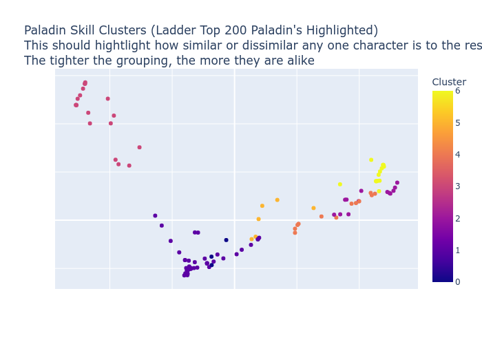

Paladin Hardcore Skill Distribution
Popular builds include:
50.77% of Paladin's invest heavily in Fist of the Heavens, Holy Bolt, Sanctuary, Holy Shock, Holy Shield
24.62% of Paladin's invest heavily in Blessed Hammer, Vigor, Blessed Aim, Concentration, Holy Shield
13.85% of Paladin's invest heavily in Holy Bolt, Dashing Strike, Sanctuary, Cleansing, Holy Shield
10.77% of Paladin's invest heavily in Charge, Salvation, Holy Shock, Resist Lightning, Resist Fire
50.77% of Paladin's Main Skills:
 Fist of the Heavens 100.00% (657)
Fist of the Heavens 100.00% (657)
 Holy Bolt 100.00% (658)
Holy Bolt 100.00% (658)
 Sanctuary 90.91% (513)
Sanctuary 90.91% (513)
 Holy Shock 51.52% (255)
Holy Shock 51.52% (255)
 Holy Shield 93.94% (250)
Holy Shield 93.94% (250)
Other common skills in this group:
Armor:
Enigma 33.33% (8)
Skin of the Vipermagi 12.50% (3)
Smoke 12.50% (3)
Stealth 12.50% (3)
Duriel's Shell 8.33% (2)
Gloves:
Magefist 33.33% (9)
Trang-Oul's Claws 22.22% (6)
Chance Guards 3.70% (1)
Sigon's Gage 3.70% (1)
Gale Hand 3.70% (1)
Ring:
Raven Frost 7.84% (4)
Nagelring 5.88% (3)
Skull Spiral 3.92% (2)
Shadow Finger 3.92% (2)
Dwarf Star 3.92% (2)
Belt:
Arachnid Mesh 29.17% (7)
Sigon's Wrap 8.33% (2)
Verdungo's Hearty Cord 8.33% (2)
String of Ears 4.17% (1)
Beast Harness 4.17% (1)
Boots:
Aldur's Advance 29.17% (7)
War Traveler 16.67% (4)
Silkweave 12.50% (3)
Tearhaunch 8.33% (2)
Sigon's Sabot 8.33% (2)
Amulet:
Rose Branded Amulet 24.00% (6)
Mara's Kaleidoscope 12.00% (3)
Rose Branded Amulet of the Apprentice 8.00% (2)
Corruption Collar 4.00% (1)
Order Heart 4.00% (1)
Left hand:
Spirit 28.21% (11)
Heart of the Oak 25.64% (10)
Call to Arms 7.69% (3)
Gnarled Staff of Teleportation 5.13% (2)
Hand of Blessed Light 5.13% (2)
Offhand:
Spirit 83.33% (25)
Herald of Zakarum 10.00% (3)
Dragonscale 3.33% (1)
Heraldic Shield 3.33% (1)
Helmet:
Harlequin Crest 37.50% (9)
Lore 16.67% (4)
Crown of Ages 8.33% (2)
Iratha's Coil 8.33% (2)
Griffon's Eye 4.17% (1)
Enigma 33.33% (8)
Skin of the Vipermagi 12.50% (3)
Smoke 12.50% (3)
Stealth 12.50% (3)
Duriel's Shell 8.33% (2)
Gloves:
Magefist 33.33% (9)
Trang-Oul's Claws 22.22% (6)
Chance Guards 3.70% (1)
Sigon's Gage 3.70% (1)
Gale Hand 3.70% (1)
Ring:
Raven Frost 7.84% (4)
Nagelring 5.88% (3)
Skull Spiral 3.92% (2)
Shadow Finger 3.92% (2)
Dwarf Star 3.92% (2)
Belt:
Arachnid Mesh 29.17% (7)
Sigon's Wrap 8.33% (2)
Verdungo's Hearty Cord 8.33% (2)
String of Ears 4.17% (1)
Beast Harness 4.17% (1)
Boots:
Aldur's Advance 29.17% (7)
War Traveler 16.67% (4)
Silkweave 12.50% (3)
Tearhaunch 8.33% (2)
Sigon's Sabot 8.33% (2)
Amulet:
Rose Branded Amulet 24.00% (6)
Mara's Kaleidoscope 12.00% (3)
Rose Branded Amulet of the Apprentice 8.00% (2)
Corruption Collar 4.00% (1)
Order Heart 4.00% (1)
Left hand:
Spirit 28.21% (11)
Heart of the Oak 25.64% (10)
Call to Arms 7.69% (3)
Gnarled Staff of Teleportation 5.13% (2)
Hand of Blessed Light 5.13% (2)
Offhand:
Spirit 83.33% (25)
Herald of Zakarum 10.00% (3)
Dragonscale 3.33% (1)
Heraldic Shield 3.33% (1)
Helmet:
Harlequin Crest 37.50% (9)
Lore 16.67% (4)
Crown of Ages 8.33% (2)
Iratha's Coil 8.33% (2)
Griffon's Eye 4.17% (1)
Armor: Enigma 33.33%, Skin of the Vipermagi 12.50%, Smoke 12.50%, Stealth 12.50%, Duriel's Shell 8.33%, Sigon's Shelter 4.17%, Lionheart 4.17%, Gothic Plate 4.17%, Iron Pelt 4.17%, The Spirit Shroud 4.17%
Gloves: Magefist 33.33%, Trang-Oul's Claws 22.22%, Chance Guards 3.70%, Sigon's Gage 3.70%, Gale Hand 3.70%, Loath Finger 3.70%, Wraithra Grip 3.70%, Lapis Gauntlets of Fortune 3.70%, Sander's Taboo 3.70%, GhoulRI Clutches 3.70%, Garnet Gauntlets of Chance 3.70%, Dread Hold 3.70%, Glorious Demonhide Gloves of Thawing 3.70%, Bramble Touch 3.70%
Ring: Raven Frost 7.84%, Nagelring 5.88%, Skull Spiral 3.92%, Shadow Finger 3.92%, Dwarf Star 3.92%, Garnet Ring of Sorcery 3.92%, Raven Circle 3.92%, Viper Eye 3.92%, Ring of the Apprentice 1.96%, Eagle Master 1.96%, The Stone of Jordan 1.96%, Manald Heal 1.96%, Death Whorl 1.96%, Entropy Master 1.96%, Stone Finger 1.96%, PlagueRI Grasp 1.96%, Raven Spiral 1.96%, PlagueRI Circle 1.96%, Bone Spiral 1.96%, PlagueRI Touch 1.96%, Blood Grip 1.96%, Viper Master 1.96%, Garnet Ring of Thawing 1.96%, Ring of Wizardry 1.96%, Bitter Master 1.96%, GhoulRI Hold 1.96%, Skull Coil 1.96%, Viper Knot 1.96%, Eagle Circle 1.96%, PlagueRI Grip 1.96%, Stone Spiral 1.96%, Doom Coil 1.96%, Ring of Fortune 1.96%, Coral Ring of Flame 1.96%, Garnet Ring of Regrowth 1.96%, Ring of Sorcery 1.96%, Wraithra Knot 1.96%, Chaos Band 1.96%, Crimson Ring 1.96%, Doom Turn 1.96%
Belt: Arachnid Mesh 29.17%, Sigon's Wrap 8.33%, Verdungo's Hearty Cord 8.33%, String of Ears 4.17%, Beast Harness 4.17%, Credendum 4.17%, Goldwrap 4.17%, Loath Chain 4.17%, Pain Fringe 4.17%, Soul Cord 4.17%, Glyph Clasp 4.17%, Bone Harness 4.17%, Cruel Chain 4.17%, Shadow Chain 4.17%, Spirit Winding 4.17%, Bladebuckle 4.17%
Boots: Aldur's Advance 29.17%, War Traveler 16.67%, Silkweave 12.50%, Tearhaunch 8.33%, Sigon's Sabot 8.33%, Natalya's Soul 8.33%, Stone Blazer 4.17%, Raven Stalker 4.17%, Demon Trample 4.17%, Infernostride 4.17%
Amulet: Rose Branded Amulet 24.00%, Mara's Kaleidoscope 12.00%, Rose Branded Amulet of the Apprentice 8.00%, Corruption Collar 4.00%, Order Heart 4.00%, Hawk Branded Amulet of Strength 4.00%, Order Necklace 4.00%, Rose Branded Amulet of the Squid 4.00%, Rose Branded Amulet of Luck 4.00%, Bitter Heart 4.00%, Rose Branded Amulet of Chain Lightning 4.00%, Iratha's Collar 4.00%, Prismatic Amulet of the Apprentice 4.00%, Rose Branded Amulet of Fortune 4.00%, Skull Wing 4.00%, Nokozan Relic 4.00%, Commander's Amulet of Luck 4.00%
Left hand: Spirit 28.21%, Heart of the Oak 25.64%, Call to Arms 7.69%, Gnarled Staff of Teleportation 5.13%, Hand of Blessed Light 5.13%, Phoenix 2.56%, Holy Thunder 2.56%, Edge 2.56%, Battle Staff of Teleportation 2.56%, Dragon's War Staff of Teleportation 2.56%, Triumphant Battle Staff of Teleportation 2.56%, Khalim's Flail 2.56%, Toxic Battle Staff of Teleportation 2.56%, War Staff of Teleportation 2.56%, Scepter of Worth 2.56%, Beryl Gnarled Staff of Teleportation 2.56%
Offhand: Spirit 83.33%, Herald of Zakarum 10.00%, Dragonscale 3.33%, Heraldic Shield 3.33%
Helmet: Harlequin Crest 37.50%, Lore 16.67%, Crown of Ages 8.33%, Iratha's Coil 8.33%, Griffon's Eye 4.17%, Rose Branded Circlet 4.17%, Sigon's Visor 4.17%, Hailstone Crest 4.17%, Glyph Horn 4.17%, Loath Shell 4.17%, The Face of Horror 4.17%
Gloves: Magefist 33.33%, Trang-Oul's Claws 22.22%, Chance Guards 3.70%, Sigon's Gage 3.70%, Gale Hand 3.70%, Loath Finger 3.70%, Wraithra Grip 3.70%, Lapis Gauntlets of Fortune 3.70%, Sander's Taboo 3.70%, GhoulRI Clutches 3.70%, Garnet Gauntlets of Chance 3.70%, Dread Hold 3.70%, Glorious Demonhide Gloves of Thawing 3.70%, Bramble Touch 3.70%
Ring: Raven Frost 7.84%, Nagelring 5.88%, Skull Spiral 3.92%, Shadow Finger 3.92%, Dwarf Star 3.92%, Garnet Ring of Sorcery 3.92%, Raven Circle 3.92%, Viper Eye 3.92%, Ring of the Apprentice 1.96%, Eagle Master 1.96%, The Stone of Jordan 1.96%, Manald Heal 1.96%, Death Whorl 1.96%, Entropy Master 1.96%, Stone Finger 1.96%, PlagueRI Grasp 1.96%, Raven Spiral 1.96%, PlagueRI Circle 1.96%, Bone Spiral 1.96%, PlagueRI Touch 1.96%, Blood Grip 1.96%, Viper Master 1.96%, Garnet Ring of Thawing 1.96%, Ring of Wizardry 1.96%, Bitter Master 1.96%, GhoulRI Hold 1.96%, Skull Coil 1.96%, Viper Knot 1.96%, Eagle Circle 1.96%, PlagueRI Grip 1.96%, Stone Spiral 1.96%, Doom Coil 1.96%, Ring of Fortune 1.96%, Coral Ring of Flame 1.96%, Garnet Ring of Regrowth 1.96%, Ring of Sorcery 1.96%, Wraithra Knot 1.96%, Chaos Band 1.96%, Crimson Ring 1.96%, Doom Turn 1.96%
Belt: Arachnid Mesh 29.17%, Sigon's Wrap 8.33%, Verdungo's Hearty Cord 8.33%, String of Ears 4.17%, Beast Harness 4.17%, Credendum 4.17%, Goldwrap 4.17%, Loath Chain 4.17%, Pain Fringe 4.17%, Soul Cord 4.17%, Glyph Clasp 4.17%, Bone Harness 4.17%, Cruel Chain 4.17%, Shadow Chain 4.17%, Spirit Winding 4.17%, Bladebuckle 4.17%
Boots: Aldur's Advance 29.17%, War Traveler 16.67%, Silkweave 12.50%, Tearhaunch 8.33%, Sigon's Sabot 8.33%, Natalya's Soul 8.33%, Stone Blazer 4.17%, Raven Stalker 4.17%, Demon Trample 4.17%, Infernostride 4.17%
Amulet: Rose Branded Amulet 24.00%, Mara's Kaleidoscope 12.00%, Rose Branded Amulet of the Apprentice 8.00%, Corruption Collar 4.00%, Order Heart 4.00%, Hawk Branded Amulet of Strength 4.00%, Order Necklace 4.00%, Rose Branded Amulet of the Squid 4.00%, Rose Branded Amulet of Luck 4.00%, Bitter Heart 4.00%, Rose Branded Amulet of Chain Lightning 4.00%, Iratha's Collar 4.00%, Prismatic Amulet of the Apprentice 4.00%, Rose Branded Amulet of Fortune 4.00%, Skull Wing 4.00%, Nokozan Relic 4.00%, Commander's Amulet of Luck 4.00%
Left hand: Spirit 28.21%, Heart of the Oak 25.64%, Call to Arms 7.69%, Gnarled Staff of Teleportation 5.13%, Hand of Blessed Light 5.13%, Phoenix 2.56%, Holy Thunder 2.56%, Edge 2.56%, Battle Staff of Teleportation 2.56%, Dragon's War Staff of Teleportation 2.56%, Triumphant Battle Staff of Teleportation 2.56%, Khalim's Flail 2.56%, Toxic Battle Staff of Teleportation 2.56%, War Staff of Teleportation 2.56%, Scepter of Worth 2.56%, Beryl Gnarled Staff of Teleportation 2.56%
Offhand: Spirit 83.33%, Herald of Zakarum 10.00%, Dragonscale 3.33%, Heraldic Shield 3.33%
Helmet: Harlequin Crest 37.50%, Lore 16.67%, Crown of Ages 8.33%, Iratha's Coil 8.33%, Griffon's Eye 4.17%, Rose Branded Circlet 4.17%, Sigon's Visor 4.17%, Hailstone Crest 4.17%, Glyph Horn 4.17%, Loath Shell 4.17%, The Face of Horror 4.17%
Skills: Holy Bolt:20, Fist of the Heavens:20, Holy Shock:20, Salvation:20, Conviction:9, Sacrifice:1, Smite:1, Zeal:1, Charge:1, Vengeance:1, Blessed Hammer:1, Absolution:1, Holy Shield:1, Might:1, Holy Fire:1, Precision:1, Holy Freeze:1, Sanctuary:1, Prayer:1, Defiance:1, Cleansing:1, Vigor:1, Redemption:1
Equipment: Armor: Enigma, Gloves: Magefist, ring: Skull Spiral, ring: Shadow Finger, Belt: Arachnid Mesh, Boots: Silkweave, Amulet: Mara's Kaleidoscope, Left hand: Phoenix, Left hand: Heart of the Oak, Offhand: Dragonscale, Offhand: Herald of Zakarum, Helmet: Griffon's Eye
Mercenary: Act 3 Eastern Sorceror - 2693, Skin of the Vipermagi, Silence, Gerke's Sanctuary
Skills: Holy Bolt:20, Fist of the Heavens:20, Holy Shock:20, Sanctuary:20, Holy Shield:7, Sacrifice:1, Smite:1, Zeal:1, Charge:1, Vengeance:1, Blessed Hammer:1, Absolution:1, Dashing Strike:1, Might:1, Holy Fire:1, Precision:1, Holy Freeze:1, Conviction:1, Prayer:1, Defiance:1, Cleansing:1, Vigor:1, Redemption:1, Salvation:1
Equipment: Helmet: Crown of Ages, Gloves: Magefist, Armor: Enigma, Boots: Aldur's Advance, Belt: Arachnid Mesh, ring: Ring of the Apprentice, ring: Eagle Master, Amulet: Corruption Collar, Left hand: Call to Arms, Left hand: Heart of the Oak, Offhand: Spirit, Offhand: Herald of Zakarum
Mercenary: Act 2 Desert Mercenary - Steel Shade, Guardian Angel, The Reaper's Toll
Skills: Holy Bolt:20, Fist of the Heavens:20, Holy Shock:20, Sanctuary:17, Redemption:4, Holy Shield:3, Sacrifice:1, Smite:1, Zeal:1, Charge:1, Vengeance:1, Blessed Hammer:1, Absolution:1, Dashing Strike:1, Might:1, Holy Fire:1, Precision:1, Holy Freeze:1, Conviction:1, Prayer:1, Defiance:1, Cleansing:1, Vigor:1, Meditation:1, Salvation:1
Equipment: Gloves: Magefist, Armor: Skin of the Vipermagi, Amulet: Order Heart, Belt: Arachnid Mesh, ring: The Stone of Jordan, ring: Manald Heal, Helmet: Harlequin Crest, Boots: Silkweave, Left hand: Heart of the Oak, Offhand: Spirit
Mercenary: Act 2 Desert Mercenary - Treachery, Steel Shade, Obedience
Skills: Holy Bolt:20, Holy Shield:20, Fist of the Heavens:20, Sanctuary:20, Sacrifice:1, Smite:1, Zeal:1, Charge:1, Vengeance:1, Blessed Hammer:1, Absolution:1, Dashing Strike:1, Might:1, Holy Fire:1, Precision:1, Holy Freeze:1, Prayer:1, Defiance:1, Cleansing:1, Vigor:1, Redemption:1, Salvation:1
Equipment: Gloves: Magefist, Belt: String of Ears, Armor: Enigma, Helmet: Harlequin Crest, Amulet: Rose Branded Amulet of the Apprentice, ring: Death Whorl, ring: Raven Frost, Boots: Aldur's Advance, Left hand: Call to Arms, Left hand: Heart of the Oak, Offhand: Spirit x2
Mercenary: Act 2 Desert Mercenary - Tal Rasha's Horadric Crest, Treachery, Insight
Skills: Holy Bolt:20, Fist of the Heavens:20, Holy Shock:20, Sanctuary:20, Holy Shield:4, Sacrifice:1, Smite:1, Zeal:1, Charge:1, Vengeance:1, Blessed Hammer:1, Absolution:1, Might:1, Holy Fire:1, Precision:1, Holy Freeze:1, Conviction:1, Prayer:1, Defiance:1, Cleansing:1, Vigor:1, Redemption:1, Salvation:1
Equipment: Boots: War Traveler, Helmet: Harlequin Crest, Gloves: Magefist, ring: Skull Spiral, ring: Raven Frost, Armor: Enigma, Belt: Arachnid Mesh, Amulet: Rose Branded Amulet, Left hand: Holy Thunder, Left hand: Heart of the Oak, Offhand: Spirit x2
Mercenary: Act 2 Desert Mercenary - Tal Rasha's Horadric Crest, Treachery, Insight
Skills: Holy Bolt:20, Fist of the Heavens:20, Sanctuary:20, Redemption:7, Holy Freeze:5, Sacrifice:1, Smite:1, Zeal:1, Charge:1, Vengeance:1, Blessed Hammer:1, Absolution:1, Holy Shield:1, Might:1, Holy Fire:1, Precision:1, Prayer:1, Defiance:1, Cleansing:1, Vigor:1
Equipment: Helmet: Harlequin Crest, Gloves: Magefist, Belt: Arachnid Mesh, Boots: War Traveler, Amulet: Mara's Kaleidoscope, Armor: Smoke, ring: Dwarf Star, ring: Nagelring, Left hand: Gnarled Staff of Teleportation, Left hand: Spirit, Offhand: Spirit
Mercenary: Act 2 Desert Mercenary - Black Hades, Tal Rasha's Horadric Crest, Insight
Skills: Fist of the Heavens:20, Sanctuary:20, Conviction:19, Holy Bolt:18, Holy Shield:4, Sacrifice:1, Smite:1, Zeal:1, Charge:1, Vengeance:1, Blessed Hammer:1, Absolution:1, Might:1, Holy Fire:1, Precision:1, Holy Freeze:1, Prayer:1, Defiance:1, Cleansing:1, Vigor:1, Meditation:1, Salvation:1
Equipment: Gloves: Magefist, Armor: Enigma, Belt: Arachnid Mesh, ring: Entropy Master, ring: Stone Finger, Helmet: Harlequin Crest, Boots: War Traveler, Amulet: Hawk Branded Amulet of Strength, Left hand: Heart of the Oak, Offhand: Spirit
Mercenary: Act 2 Desert Mercenary - Steel Shade, Leviathan, Infinity
Skills: Holy Bolt:20, Fist of the Heavens:20, Sanctuary:20, Salvation:17, Holy Shield:6, Conviction:4, Sacrifice:1, Smite:1, Zeal:1, Charge:1, Vengeance:1, Blessed Hammer:1, Absolution:1, Might:1, Holy Fire:1, Precision:1, Holy Freeze:1, Holy Shock:1, Prayer:1, Defiance:1
Equipment: Armor: Skin of the Vipermagi, Amulet: Rose Branded Amulet, Boots: Tearhaunch, Belt: Beast Harness, ring: PlagueRI Grasp, ring: Garnet Ring of Sorcery, Helmet: Rose Branded Circlet, Gloves: Chance Guards, Left hand: Spirit, Offhand: Spirit
Mercenary: Act 2 Desert Mercenary - Tal Rasha's Horadric Crest, Shaftstop, Insight
Skills: Holy Bolt:20, Fist of the Heavens:20, Sanctuary:20, Holy Shock:16, Holy Shield:5, Sacrifice:1, Smite:1, Zeal:1, Charge:1, Vengeance:1, Blessed Hammer:1, Absolution:1, Might:1, Holy Fire:1, Precision:1, Holy Freeze:1, Conviction:1, Prayer:1, Defiance:1, Cleansing:1, Vigor:1, Redemption:1, Salvation:1
Equipment: Helmet: Crown of Ages, Belt: Arachnid Mesh, Armor: Enigma, Gloves: Trang-Oul's Claws, Amulet: Rose Branded Amulet of the Apprentice, ring: Raven Spiral, ring: PlagueRI Circle, Boots: War Traveler, Left hand: Call to Arms, Left hand: Heart of the Oak, Offhand: Spirit, Offhand: Herald of Zakarum
Mercenary: Act 2 Desert Mercenary - Fortitude, Crown of Thieves, Insight
Skills: Holy Bolt:20, Fist of the Heavens:20, Sanctuary:20, Holy Shield:15, Vigor:7, Dashing Strike:2, Sacrifice:1, Smite:1, Zeal:1, Charge:1, Vengeance:1, Blessed Hammer:1, Absolution:1, Might:1, Holy Fire:1, Precision:1, Holy Freeze:1, Prayer:1, Defiance:1, Cleansing:1, Redemption:1, Salvation:1
Equipment: Armor: Sigon's Shelter, Helmet: Sigon's Visor, Boots: Sigon's Sabot, Belt: Sigon's Wrap, Gloves: Sigon's Gage
Mercenary: Act 2 Desert Mercenary - No equipment
Skills: Holy Bolt:20, Fist of the Heavens:20, Holy Shock:20, Sanctuary:20, Holy Shield:2, Sacrifice:1, Smite:1, Zeal:1, Charge:1, Vengeance:1, Blessed Hammer:1, Absolution:1, Might:1, Holy Fire:1, Precision:1, Holy Freeze:1, Conviction:1, Prayer:1, Defiance:1, Cleansing:1, Vigor:1, Redemption:1
Equipment:
Mercenary: Act 2 Desert Mercenary - Tal Rasha's Horadric Crest, Leviathan, Insight
Skills: Holy Bolt:20, Fist of the Heavens:20, Sanctuary:20, Redemption:15, Holy Shield:9, Sacrifice:1, Smite:1, Zeal:1, Charge:1, Vengeance:1, Blessed Hammer:1, Absolution:1, Might:1, Holy Fire:1, Precision:1, Holy Freeze:1, Holy Shock:1, Prayer:1, Defiance:1, Cleansing:1, Vigor:1
Equipment: Amulet: Rose Branded Amulet, ring: Raven Frost, ring: Nagelring, Gloves: Trang-Oul's Claws, Helmet: Harlequin Crest, Boots: Aldur's Advance, Belt: Credendum, Armor: Enigma, Left hand: Edge, Left hand: Heart of the Oak, Offhand: Spirit
Mercenary: Act 2 Desert Mercenary - Vampire Gaze, Treachery, Insight
Skills: Holy Bolt:20, Holy Shield:20, Fist of the Heavens:20, Sanctuary:20, Conviction:3, Sacrifice:1, Smite:1, Zeal:1, Charge:1, Vengeance:1, Blessed Hammer:1, Absolution:1, Might:1, Holy Fire:1, Precision:1, Holy Freeze:1, Prayer:1, Defiance:1, Cleansing:1, Vigor:1, Redemption:1, Salvation:1
Equipment: ring: Bone Spiral, ring: Raven Circle, Armor: Skin of the Vipermagi, Belt: Verdungo's Hearty Cord, Gloves: Trang-Oul's Claws, Helmet: Harlequin Crest, Boots: Aldur's Advance, Amulet: Order Necklace, Left hand: Heart of the Oak, Offhand: Spirit
Mercenary: Act 2 Desert Mercenary - Spirit Forge, Crown of Ages, Obedience
Skills: Holy Bolt:20, Holy Shield:20, Fist of the Heavens:20, Sanctuary:20, Defiance:5, Sacrifice:1, Smite:1, Zeal:1, Charge:1, Vengeance:1, Blessed Hammer:1, Absolution:1, Might:1, Holy Fire:1, Precision:1, Holy Freeze:1, Prayer:1, Salvation:1
Equipment: ring: Viper Eye, ring: PlagueRI Touch, Gloves: Gale Hand, Amulet: Rose Branded Amulet of the Squid, Belt: Goldwrap, Armor: Duriel's Shell, Helmet: Hailstone Crest, Boots: Silkweave, Left hand: Gnarled Staff of Teleportation, Left hand: Spirit, Offhand: Spirit
Mercenary: Act 2 Desert Mercenary - Haemosu's Adamant, Guillaume's Face, Insight
Skills: Holy Bolt:20, Holy Shield:20, Fist of the Heavens:20, Sanctuary:20, Sacrifice:1, Smite:1, Zeal:1, Charge:1, Vengeance:1, Blessed Hammer:1, Absolution:1, Dashing Strike:1, Might:1, Holy Fire:1, Precision:1, Holy Freeze:1, Conviction:1, Prayer:1, Defiance:1, Cleansing:1, Vigor:1, Redemption:1
Equipment:
Mercenary: Act 2 Desert Mercenary - Treachery, Crown of Thieves, Insight
Skills: Holy Bolt:20, Fist of the Heavens:20, Holy Shock:20, Sanctuary:19, Sacrifice:1, Smite:1, Zeal:1, Charge:1, Vengeance:1, Blessed Hammer:1, Absolution:1, Holy Shield:1, Might:1, Holy Fire:1, Precision:1, Holy Freeze:1, Conviction:1, Prayer:1, Defiance:1, Cleansing:1, Vigor:1, Redemption:1, Salvation:1
Equipment: ring: Blood Grip, ring: Viper Master, Helmet: Glyph Horn, Amulet: Rose Branded Amulet of Luck, Left hand: Battle Staff of Teleportation, Gloves: Loath Finger, Offhand: Spirit
Mercenary: Act 3 Eastern Sorceror - No equipment
Skills: Holy Bolt:20, Fist of the Heavens:20, Sanctuary:20, Holy Shield:10, Prayer:5, Sacrifice:1, Smite:1, Zeal:1, Charge:1, Vengeance:1, Blessed Hammer:1, Absolution:1, Might:1, Holy Fire:1, Precision:1, Holy Freeze:1, Defiance:1, Cleansing:1, Vigor:1, Redemption:1
Equipment: Amulet: Mara's Kaleidoscope, Gloves: Trang-Oul's Claws, Boots: Aldur's Advance, Belt: Verdungo's Hearty Cord, ring: Raven Frost, ring: Dwarf Star, Helmet: Harlequin Crest, Armor: Enigma, Left hand: Heart of the Oak, Offhand: Spirit
Mercenary: Act 2 Desert Mercenary - Shaftstop, Steel Shade, The Reaper's Toll
Skills: Holy Bolt:20, Fist of the Heavens:20, Sanctuary:20, Holy Shock:17, Sacrifice:1, Smite:1, Zeal:1, Charge:1, Vengeance:1, Blessed Hammer:1, Absolution:1, Holy Shield:1, Might:1, Holy Fire:1, Precision:1, Holy Freeze:1, Conviction:1, Prayer:1, Defiance:1, Cleansing:1, Vigor:1, Redemption:1
Equipment:
Mercenary: Act 2 Desert Mercenary - Tal Rasha's Horadric Crest, Duriel's Shell, Insight
Skills: Holy Bolt:20, Fist of the Heavens:20, Sanctuary:20, Holy Shield:18, Sacrifice:1, Smite:1, Zeal:1, Charge:1, Vengeance:1, Blessed Hammer:1, Absolution:1, Might:1, Holy Fire:1, Precision:1, Holy Freeze:1, Conviction:1, Prayer:1, Defiance:1, Cleansing:1, Vigor:1, Redemption:1, Salvation:1
Equipment:
Mercenary: Act 2 Desert Mercenary - Duriel's Shell, Rockstopper, Insight
Skills: Holy Bolt:20, Fist of the Heavens:20, Sanctuary:20, Holy Shield:16, Sacrifice:1, Smite:1, Zeal:1, Charge:1, Vengeance:1, Blessed Hammer:1, Absolution:1, Might:1, Holy Fire:1, Precision:1, Holy Freeze:1, Prayer:1, Defiance:1, Cleansing:1, Vigor:1, Redemption:1
Equipment: Armor: Smoke, ring: Garnet Ring of Thawing, ring: Ring of Wizardry, Amulet: Bitter Heart, Belt: Loath Chain, Boots: Tearhaunch, Gloves: Trang-Oul's Claws, Helmet: Loath Shell, Left hand: Dragon's War Staff of Teleportation, Left hand: Spirit, Offhand: Spirit
Mercenary: Act 2 Desert Mercenary - Cure, Smoke, Insight
Skills: Holy Bolt:20, Fist of the Heavens:20, Sanctuary:20, Holy Shield:10, Defiance:2, Sacrifice:1, Smite:1, Zeal:1, Charge:1, Vengeance:1, Blessed Hammer:1, Absolution:1, Dashing Strike:1, Might:1, Holy Fire:1, Precision:1, Holy Freeze:1, Holy Shock:1, Conviction:1, Prayer:1, Cleansing:1, Vigor:1, Redemption:1, Salvation:1
Equipment: ring: Bitter Master, ring: Viper Eye, Helmet: Lore, Belt: Pain Fringe, Armor: Stealth, Boots: Stone Blazer, Amulet: Rose Branded Amulet of Chain Lightning, Gloves: Magefist, Left hand: Triumphant Battle Staff of Teleportation, Left hand: Spirit, Offhand: Spirit
Mercenary: Act 2 Desert Mercenary - Heavenly Garb, Vampire Gaze, Insight
Skills: Holy Bolt:20, Fist of the Heavens:20, Sanctuary:20, Holy Shield:14, Sacrifice:1, Smite:1, Zeal:1, Charge:1, Vengeance:1, Blessed Hammer:1, Absolution:1, Might:1, Holy Fire:1, Precision:1, Holy Freeze:1, Prayer:1, Defiance:1, Cleansing:1, Vigor:1, Redemption:1
Equipment: Gloves: Trang-Oul's Claws, Armor: Lionheart, Belt: Soul Cord, Boots: Aldur's Advance, Helmet: Iratha's Coil, Amulet: Iratha's Collar, ring: GhoulRI Hold, ring: Skull Coil, Left hand: Spirit, Offhand: Spirit
Mercenary: Act 2 Desert Mercenary - Chromatic Coronet of Nirvana, Naj's Light Plate, Viperfork
Skills: Holy Bolt:20, Fist of the Heavens:20, Holy Shock:20, Holy Shield:10, Sacrifice:1, Smite:1, Zeal:1, Charge:1, Vengeance:1, Blessed Hammer:1, Absolution:1, Might:1, Holy Fire:1, Precision:1, Holy Freeze:1, Prayer:1, Defiance:1, Cleansing:1, Vigor:1, Redemption:1, Salvation:1
Equipment: Amulet: Prismatic Amulet of the Apprentice, Belt: Glyph Clasp, Boots: Natalya's Soul, Gloves: Magefist, Armor: Duriel's Shell, Helmet: Harlequin Crest, ring: Viper Knot, ring: Shadow Finger, Left hand: Hand of Blessed Light, Offhand: Spirit
Mercenary: Act 2 Desert Mercenary - Tal Rasha's Horadric Crest, Smoke, Spire of Honor
Skills: Holy Bolt:20, Fist of the Heavens:20, Holy Shock:20, Sanctuary:6, Holy Shield:5, Sacrifice:1, Smite:1, Zeal:1, Charge:1, Vengeance:1, Blessed Hammer:1, Absolution:1, Might:1, Holy Fire:1, Precision:1, Holy Freeze:1, Prayer:1, Defiance:1, Cleansing:1, Vigor:1, Redemption:1
Equipment: Armor: Smoke, ring: Eagle Circle, ring: PlagueRI Grip, Gloves: Wraithra Grip, Amulet: Rose Branded Amulet, Belt: Bone Harness, Boots: Raven Stalker, Left hand: Khalim's Flail, Left hand: Hand of Blessed Light
Mercenary: Act 2 Desert Mercenary - Duskdeep, Greyform, Insight
Skills: Holy Bolt:20, Fist of the Heavens:20, Sanctuary:20, Holy Shield:10, Sacrifice:1, Smite:1, Zeal:1, Charge:1, Vengeance:1, Blessed Hammer:1, Absolution:1, Might:1, Holy Fire:1, Precision:1, Holy Freeze:1, Conviction:1, Prayer:1, Defiance:1, Cleansing:1, Vigor:1, Redemption:1, Salvation:1
Equipment: Helmet: Lore, ring: Nagelring, ring: Stone Spiral, Gloves: Lapis Gauntlets of Fortune, Armor: Gothic Plate, Boots: Demon Trample, Belt: Cruel Chain, Left hand: Toxic Battle Staff of Teleportation, Left hand: Spirit, Offhand: Spirit
Mercenary: Act 2 Desert Mercenary - Storm Mask, Rockfleece, Insight
Skills: Holy Bolt:20, Fist of the Heavens:20, Sanctuary:20, Conviction:7, Holy Shield:4, Sacrifice:1, Smite:1, Zeal:1, Charge:1, Vengeance:1, Blessed Hammer:1, Absolution:1, Might:1, Holy Fire:1, Precision:1, Holy Freeze:1, Prayer:1, Salvation:1
Equipment:
Mercenary: Act 2 Desert Mercenary - Smoke, Howltusk, Insight
Skills: Holy Bolt:20, Fist of the Heavens:20, Holy Shock:19, Holy Shield:10, Sacrifice:1, Smite:1, Zeal:1, Charge:1, Vengeance:1, Blessed Hammer:1, Absolution:1, Might:1, Holy Fire:1, Holy Freeze:1, Prayer:1, Defiance:1, Cleansing:1, Vigor:1, Redemption:1
Equipment:
Mercenary: Act 2 Desert Mercenary - Iron Pelt, Guillaume's Face, Insight
Skills: Holy Bolt:20, Fist of the Heavens:20, Conviction:20, Holy Shock:8, Sacrifice:1, Smite:1, Zeal:1, Charge:1, Vengeance:1, Blessed Hammer:1, Absolution:1, Holy Shield:1, Dashing Strike:1, Might:1, Holy Fire:1, Precision:1, Holy Freeze:1, Sanctuary:1, Salvation:1
Equipment: Helmet: Lore, Gloves: Sander's Taboo, ring: Raven Circle, Belt: Shadow Chain, Boots: Infernostride, Amulet: Rose Branded Amulet of Fortune, Left hand: War Staff of Teleportation, Left hand: Spirit, Offhand: Spirit
Mercenary: Act 3 Eastern Sorceror - Ancients' Pledge
Skills: Holy Bolt:20, Fist of the Heavens:20, Holy Shock:20, Sacrifice:1, Smite:1, Zeal:1, Charge:1, Vengeance:1, Blessed Hammer:1, Absolution:1, Holy Shield:1, Might:1, Holy Fire:1, Holy Freeze:1, Prayer:1, Defiance:1, Cleansing:1, Vigor:1, Redemption:1, Salvation:1
Equipment: ring: Doom Coil, ring: Ring of Fortune, Belt: Spirit Winding, Armor: Stealth, Gloves: GhoulRI Clutches, Boots: Natalya's Soul, Helmet: The Face of Horror, Left hand: Scepter of Worth, Left hand: Spirit, Offhand: Heraldic Shield, Offhand: Spirit, Amulet: Skull Wing
Mercenary: Act 2 Desert Mercenary - Darkglow, Tal Rasha's Horadric Crest, Insight
Skills: Holy Bolt:20, Fist of the Heavens:20, Holy Shock:12, Might:2, Sacrifice:1, Smite:1, Zeal:1, Charge:1, Vengeance:1, Blessed Hammer:1, Absolution:1, Holy Shield:1, Holy Fire:1, Precision:1, Holy Freeze:1, Sanctuary:1, Conviction:1, Prayer:1, Defiance:1, Cleansing:1, Vigor:1, Redemption:1, Salvation:1
Equipment: Boots: Sigon's Sabot, Gloves: Garnet Gauntlets of Chance, Belt: Sigon's Wrap, Amulet: Rose Branded Amulet, ring: Coral Ring of Flame, ring: Garnet Ring of Regrowth, Helmet: Iratha's Coil, Armor: Iron Pelt, Left hand: Spirit, Offhand: Spirit
Mercenary: Act 2 Desert Mercenary - Wormskull, Venom Ward, Insight
Skills: Holy Bolt:20, Sanctuary:20, Fist of the Heavens:17, Sacrifice:1, Zeal:1, Vengeance:1, Blessed Hammer:1, Absolution:1, Might:1, Holy Fire:1, Precision:1, Holy Freeze:1, Prayer:1, Defiance:1, Cleansing:1, Vigor:1, Redemption:1
Equipment: Gloves: Dread Hold, Amulet: Nokozan Relic, ring: Garnet Ring of Sorcery, ring: Ring of Sorcery, Offhand: Spirit
Mercenary: Act 2 Desert Mercenary - Fiendra Crest, Toothrow
Skills: Holy Bolt:20, Fist of the Heavens:20, Sanctuary:13, Sacrifice:1, Smite:1, Zeal:1, Charge:1, Vengeance:1, Blessed Hammer:1, Absolution:1, Holy Shield:1, Might:1, Holy Fire:1, Precision:1, Holy Freeze:1, Prayer:1, Defiance:1, Cleansing:1, Vigor:1, Redemption:1, Salvation:1
Equipment: ring: Wraithra Knot, ring: Chaos Band, Gloves: Glorious Demonhide Gloves of Thawing, Amulet: Rose Branded Amulet, Armor: Stealth
Mercenary: Act 2 Desert Mercenary - Holocaust Mantle, Wormskull, The Impaler
Skills: Holy Bolt:20, Fist of the Heavens:20, Sanctuary:15, Sacrifice:1, Zeal:1, Vengeance:1, Blessed Hammer:1, Absolution:1, Might:1, Holy Fire:1, Precision:1, Holy Freeze:1, Prayer:1, Defiance:1, Cleansing:1, Vigor:1, Redemption:1
Equipment: ring: Crimson Ring, ring: Doom Turn, Helmet: Lore, Boots: Aldur's Advance, Gloves: Bramble Touch, Belt: Bladebuckle, Amulet: Commander's Amulet of Luck, Armor: The Spirit Shroud, Left hand: Beryl Gnarled Staff of Teleportation, Left hand: Spirit, Offhand: Spirit
Mercenary: Act 2 Desert Mercenary - Mask, Holocaust Cloak, Insight
24.62% of Paladin's Main Skills:
 Blessed Hammer 100.00% (320)
Blessed Hammer 100.00% (320)
 Vigor 100.00% (308)
Vigor 100.00% (308)
 Blessed Aim 100.00% (264)
Blessed Aim 100.00% (264)
 Concentration 87.50% (247)
Concentration 87.50% (247)
Holy Shield 100.00% (136)
Other common skills in this group:
Boots:
Tearhaunch 25.00% (3)
Waterwalk 16.67% (2)
Natalya's Soul 16.67% (2)
War Traveler 8.33% (1)
Pain Spur 8.33% (1)
Helmet:
Harlequin Crest 38.46% (5)
Lore 38.46% (5)
Dire Visor 7.69% (1)
Tarnhelm 7.69% (1)
Rose Branded Tiara 7.69% (1)
Amulet:
PlagueRI Emblem 8.33% (1)
Skull Gorget 8.33% (1)
Seraph's Hymn 8.33% (1)
Mara's Kaleidoscope 8.33% (1)
Blood Heart 8.33% (1)
Ring:
Raven Frost 13.64% (3)
Blood Coil 4.55% (1)
The Stone of Jordan 4.55% (1)
Beast Band 4.55% (1)
Chaos Coil 4.55% (1)
Gloves:
Trang-Oul's Claws 33.33% (4)
Hailstone Grasp 8.33% (1)
Dracul's Grasp 8.33% (1)
Bloodfist 8.33% (1)
Venom Grip 8.33% (1)
Armor:
Guardian Angel 20.00% (2)
Skin of the Vipermagi 20.00% (2)
Stealth 20.00% (2)
Enigma 10.00% (1)
Tal Rasha's Guardianship 10.00% (1)
Belt:
Verdungo's Hearty Cord 16.67% (2)
String of Ears 16.67% (2)
Sigon's Wrap 16.67% (2)
Havoc Harness 8.33% (1)
Credendum 8.33% (1)
Left hand:
Spirit 36.36% (8)
Heart of the Oak 13.64% (3)
Holy Thunder 9.09% (2)
War Staff of Teleportation 9.09% (2)
Call to Arms 4.55% (1)
Offhand:
Spirit 76.47% (13)
Herald of Zakarum 11.76% (2)
Heraldic Shield 5.88% (1)
Arrows 5.88% (1)
Tearhaunch 25.00% (3)
Waterwalk 16.67% (2)
Natalya's Soul 16.67% (2)
War Traveler 8.33% (1)
Pain Spur 8.33% (1)
Helmet:
Harlequin Crest 38.46% (5)
Lore 38.46% (5)
Dire Visor 7.69% (1)
Tarnhelm 7.69% (1)
Rose Branded Tiara 7.69% (1)
Amulet:
PlagueRI Emblem 8.33% (1)
Skull Gorget 8.33% (1)
Seraph's Hymn 8.33% (1)
Mara's Kaleidoscope 8.33% (1)
Blood Heart 8.33% (1)
Ring:
Raven Frost 13.64% (3)
Blood Coil 4.55% (1)
The Stone of Jordan 4.55% (1)
Beast Band 4.55% (1)
Chaos Coil 4.55% (1)
Gloves:
Trang-Oul's Claws 33.33% (4)
Hailstone Grasp 8.33% (1)
Dracul's Grasp 8.33% (1)
Bloodfist 8.33% (1)
Venom Grip 8.33% (1)
Armor:
Guardian Angel 20.00% (2)
Skin of the Vipermagi 20.00% (2)
Stealth 20.00% (2)
Enigma 10.00% (1)
Tal Rasha's Guardianship 10.00% (1)
Belt:
Verdungo's Hearty Cord 16.67% (2)
String of Ears 16.67% (2)
Sigon's Wrap 16.67% (2)
Havoc Harness 8.33% (1)
Credendum 8.33% (1)
Left hand:
Spirit 36.36% (8)
Heart of the Oak 13.64% (3)
Holy Thunder 9.09% (2)
War Staff of Teleportation 9.09% (2)
Call to Arms 4.55% (1)
Offhand:
Spirit 76.47% (13)
Herald of Zakarum 11.76% (2)
Heraldic Shield 5.88% (1)
Arrows 5.88% (1)
Boots: Tearhaunch 25.00%, Waterwalk 16.67%, Natalya's Soul 16.67%, War Traveler 8.33%, Pain Spur 8.33%, Corpse Tread 8.33%, Imp Nails 8.33%, Sigon's Sabot 8.33%
Helmet: Harlequin Crest 38.46%, Lore 38.46%, Dire Visor 7.69%, Tarnhelm 7.69%, Rose Branded Tiara 7.69%
Amulet: PlagueRI Emblem 8.33%, Skull Gorget 8.33%, Seraph's Hymn 8.33%, Mara's Kaleidoscope 8.33%, Blood Heart 8.33%, Entropy Emblem 8.33%, Skull Clasp 8.33%, Rose Branded Amulet 8.33%, Storm Noose 8.33%, Monk's Amulet of the Tiger 8.33%, Garnet Amulet 8.33%, Garnet Amulet of the Apprentice 8.33%
Ring: Raven Frost 13.64%, Blood Coil 4.55%, The Stone of Jordan 4.55%, Beast Band 4.55%, Chaos Coil 4.55%, Carrion Wind 4.55%, Scintillating Ring of Regrowth 4.55%, Rainbow Ring 4.55%, Rainbow Ring of Precision 4.55%, PlagueRI Touch 4.55%, Death Band 4.55%, Corruption Spiral 4.55%, Garnet Ring of the Jackal 4.55%, Stone Coil 4.55%, Wraithra Gyre 4.55%, Eagle Grasp 4.55%, Dread Loop 4.55%, Triumphant Ring of the Apprentice 4.55%, Doom Coil 4.55%, Doom Hold 4.55%
Gloves: Trang-Oul's Claws 33.33%, Hailstone Grasp 8.33%, Dracul's Grasp 8.33%, Bloodfist 8.33%, Venom Grip 8.33%, Magefist 8.33%, Pain Fist 8.33%, Sigon's Gage 8.33%, Glyph Touch 8.33%
Armor: Guardian Angel 20.00%, Skin of the Vipermagi 20.00%, Stealth 20.00%, Enigma 10.00%, Tal Rasha's Guardianship 10.00%, Smoke 10.00%, Raven Mantle 10.00%
Belt: Verdungo's Hearty Cord 16.67%, String of Ears 16.67%, Sigon's Wrap 16.67%, Havoc Harness 8.33%, Credendum 8.33%, Tal Rasha's Fine-Spun Cloth 8.33%, Soul Cord 8.33%, Immortal King's Detail 8.33%, Rune Buckle 8.33%
Left hand: Spirit 36.36%, Heart of the Oak 13.64%, Holy Thunder 9.09%, War Staff of Teleportation 9.09%, Call to Arms 4.55%, Lightsabre 4.55%, Gnarled Staff of Teleportation 4.55%, Spire of Honor 4.55%, Spire of Lazarus 4.55%, Long Bow 4.55%, Howling Battle Staff of Teleportation 4.55%
Offhand: Spirit 76.47%, Herald of Zakarum 11.76%, Heraldic Shield 5.88%, Arrows 5.88%
Helmet: Harlequin Crest 38.46%, Lore 38.46%, Dire Visor 7.69%, Tarnhelm 7.69%, Rose Branded Tiara 7.69%
Amulet: PlagueRI Emblem 8.33%, Skull Gorget 8.33%, Seraph's Hymn 8.33%, Mara's Kaleidoscope 8.33%, Blood Heart 8.33%, Entropy Emblem 8.33%, Skull Clasp 8.33%, Rose Branded Amulet 8.33%, Storm Noose 8.33%, Monk's Amulet of the Tiger 8.33%, Garnet Amulet 8.33%, Garnet Amulet of the Apprentice 8.33%
Ring: Raven Frost 13.64%, Blood Coil 4.55%, The Stone of Jordan 4.55%, Beast Band 4.55%, Chaos Coil 4.55%, Carrion Wind 4.55%, Scintillating Ring of Regrowth 4.55%, Rainbow Ring 4.55%, Rainbow Ring of Precision 4.55%, PlagueRI Touch 4.55%, Death Band 4.55%, Corruption Spiral 4.55%, Garnet Ring of the Jackal 4.55%, Stone Coil 4.55%, Wraithra Gyre 4.55%, Eagle Grasp 4.55%, Dread Loop 4.55%, Triumphant Ring of the Apprentice 4.55%, Doom Coil 4.55%, Doom Hold 4.55%
Gloves: Trang-Oul's Claws 33.33%, Hailstone Grasp 8.33%, Dracul's Grasp 8.33%, Bloodfist 8.33%, Venom Grip 8.33%, Magefist 8.33%, Pain Fist 8.33%, Sigon's Gage 8.33%, Glyph Touch 8.33%
Armor: Guardian Angel 20.00%, Skin of the Vipermagi 20.00%, Stealth 20.00%, Enigma 10.00%, Tal Rasha's Guardianship 10.00%, Smoke 10.00%, Raven Mantle 10.00%
Belt: Verdungo's Hearty Cord 16.67%, String of Ears 16.67%, Sigon's Wrap 16.67%, Havoc Harness 8.33%, Credendum 8.33%, Tal Rasha's Fine-Spun Cloth 8.33%, Soul Cord 8.33%, Immortal King's Detail 8.33%, Rune Buckle 8.33%
Left hand: Spirit 36.36%, Heart of the Oak 13.64%, Holy Thunder 9.09%, War Staff of Teleportation 9.09%, Call to Arms 4.55%, Lightsabre 4.55%, Gnarled Staff of Teleportation 4.55%, Spire of Honor 4.55%, Spire of Lazarus 4.55%, Long Bow 4.55%, Howling Battle Staff of Teleportation 4.55%
Offhand: Spirit 76.47%, Herald of Zakarum 11.76%, Heraldic Shield 5.88%, Arrows 5.88%
Skills: Blessed Hammer:20, Blessed Aim:20, Concentration:20, Vigor:20, Holy Shield:15, Resist Lightning:2, Smite:1, Holy Bolt:1, Charge:1, Might:1, Prayer:1, Defiance:1, Cleansing:1
Equipment: Boots: War Traveler, Helmet: Harlequin Crest, Amulet: PlagueRI Emblem, ring: Blood Coil, ring: The Stone of Jordan, Gloves: Trang-Oul's Claws, Armor: Guardian Angel, Belt: Havoc Harness, Left hand: Call to Arms, Left hand: Heart of the Oak, Offhand: Spirit, Offhand: Herald of Zakarum
Mercenary: Act 2 Desert Mercenary - Treachery, Tal Rasha's Horadric Crest, Insight
Skills: Blessed Hammer:20, Blessed Aim:20, Concentration:20, Vigor:20, Defiance:13, Holy Shield:3, Smite:1, Holy Bolt:1, Charge:1, Might:1, Prayer:1, Cleansing:1, Redemption:1
Equipment: ring: Beast Band, ring: Chaos Coil, Boots: Waterwalk, Gloves: Trang-Oul's Claws, Belt: Verdungo's Hearty Cord, Amulet: Skull Gorget, Helmet: Harlequin Crest, Armor: Enigma, Left hand: Holy Thunder, Left hand: Heart of the Oak, Offhand: Spirit x2
Mercenary: Act 2 Desert Mercenary - Steel Shade, Smoke, Insight
Skills: Blessed Hammer:20, Blessed Aim:20, Concentration:20, Vigor:20, Holy Shield:14, Smite:1, Holy Bolt:1, Charge:1, Might:1, Prayer:1, Defiance:1, Cleansing:1, Redemption:1, Salvation:1
Equipment:
Mercenary: Act 2 Desert Mercenary - Treachery, Vampire Gaze, Insight
Skills: Blessed Hammer:20, Blessed Aim:20, Concentration:20, Vigor:20, Holy Shield:14, Smite:1, Holy Bolt:1, Charge:1, Might:1, Prayer:1, Defiance:1, Cleansing:1
Equipment: Helmet: Lore, Gloves: Hailstone Grasp, Offhand: Spirit
Mercenary: Act 2 Desert Mercenary - No equipment
Skills: Blessed Hammer:20, Blessed Aim:20, Concentration:20, Vigor:20, Holy Shield:11, Smite:1, Holy Bolt:1, Charge:1, Might:1, Prayer:1, Defiance:1, Cleansing:1, Redemption:1, Salvation:1
Equipment:
Mercenary: Act 2 Desert Mercenary - Andariel's Visage, Treachery, Insight
Skills: Blessed Hammer:20, Blessed Aim:20, Vigor:20, Zeal:11, Holy Shield:11, Sacrifice:9, Smite:1, Holy Bolt:1, Charge:1, Might:1, Prayer:1, Defiance:1, Cleansing:1
Equipment: Amulet: Seraph's Hymn, Boots: Pain Spur, Belt: String of Ears, Armor: Guardian Angel, Gloves: Dracul's Grasp, ring: Raven Frost, ring: Carrion Wind, Helmet: Harlequin Crest, Left hand: War Staff of Teleportation, Left hand: Lightsabre, Offhand: Spirit
Mercenary: Act 2 Desert Mercenary - Crown of Thieves, Duriel's Shell, Insight
Skills: Blessed Hammer:20, Blessed Aim:20, Concentration:20, Vigor:20, Sacrifice:1, Smite:1, Holy Bolt:1, Zeal:1, Charge:1, Holy Shield:1, Might:1, Holy Fire:1, Holy Freeze:1, Prayer:1, Defiance:1, Cleansing:1, Redemption:1, Salvation:1
Equipment: Belt: Credendum, Amulet: Mara's Kaleidoscope, Helmet: Harlequin Crest, Boots: Waterwalk, Left hand: Heart of the Oak, Offhand: Spirit
Mercenary: Act 3 Eastern Sorceror - Rockstopper, Ormus' Robes, Griswold's Edge, Gerke's Sanctuary
Skills: Blessed Hammer:20, Blessed Aim:20, Concentration:20, Vigor:20, Holy Shield:7, Smite:1, Holy Bolt:1, Charge:1, Might:1, Prayer:1, Defiance:1, Cleansing:1, Salvation:1
Equipment: Boots: Tearhaunch, Belt: Tal Rasha's Fine-Spun Cloth, Gloves: Bloodfist, Left hand: Gnarled Staff of Teleportation, Left hand: Spirit, Amulet: Blood Heart, ring: Scintillating Ring of Regrowth, ring: Rainbow Ring, Helmet: Dire Visor, Armor: Tal Rasha's Guardianship, Offhand: Spirit
Mercenary: Act 2 Desert Mercenary - Undead Crown, Hwanin's Refuge, Insight
Skills: Blessed Hammer:20, Holy Shield:20, Blessed Aim:20, Vigor:20, Concentration:6, Smite:1, Holy Bolt:1, Charge:1, Might:1, Prayer:1, Defiance:1, Cleansing:1
Equipment: Armor: Skin of the Vipermagi, Gloves: Venom Grip, Belt: Soul Cord, ring: Rainbow Ring of Precision, ring: Raven Frost, Boots: Corpse Tread, Helmet: Lore, Amulet: Entropy Emblem, Left hand: Spire of Honor, Left hand: Spirit, Offhand: Spirit
Mercenary: Act 2 Desert Mercenary - Naj's Circlet, Spirit Forge, Insight
Skills: Blessed Hammer:20, Blessed Aim:20, Concentration:20, Vigor:20, Smite:1, Holy Bolt:1, Charge:1, Holy Shield:1, Might:1, Prayer:1, Defiance:1, Cleansing:1
Equipment:
Mercenary: Act 2 Desert Mercenary - Full Helm, Iceblink, Insight
Skills: Blessed Hammer:20, Blessed Aim:20, Concentration:20, Vigor:20, Dashing Strike:3, Smite:1, Holy Bolt:1, Charge:1, Holy Shield:1, Might:1, Prayer:1, Defiance:1, Cleansing:1
Equipment: ring: PlagueRI Touch, ring: Death Band, Helmet: Lore, Gloves: Trang-Oul's Claws, Amulet: Skull Clasp, Belt: String of Ears, Boots: Tearhaunch, Left hand: War Staff of Teleportation, Left hand: Spirit, Offhand: Spirit
Mercenary: Act 2 Desert Mercenary - Smoke, Crown of Thieves, Insight
Skills: Blessed Hammer:20, Blessed Aim:20, Vigor:20, Holy Shield:16, Sacrifice:1, Smite:1, Holy Bolt:1, Zeal:1, Charge:1, Dashing Strike:1, Might:1, Prayer:1, Defiance:1, Cleansing:1, Redemption:1, Salvation:1
Equipment: Amulet: Rose Branded Amulet, Armor: Smoke, ring: Corruption Spiral, ring: Garnet Ring of the Jackal, Boots: Natalya's Soul, Helmet: Tarnhelm, Belt: Immortal King's Detail, Gloves: Trang-Oul's Claws, Left hand: Holy Thunder, Left hand: Spirit, Offhand: Heraldic Shield, Offhand: Spirit
Mercenary: Act 2 Desert Mercenary - Cap, Viper Shroud, Insight
Skills: Blessed Hammer:20, Concentration:20, Vigor:20, Blessed Aim:13, Holy Shield:4, Sacrifice:2, Smite:1, Holy Bolt:1, Zeal:1, Charge:1, Dashing Strike:1, Might:1, Prayer:1, Defiance:1, Cleansing:1, Redemption:1
Equipment: ring: Stone Coil, ring: Raven Frost, Boots: Tearhaunch, Helmet: Rose Branded Tiara, Amulet: Storm Noose, Gloves: Magefist, Belt: Verdungo's Hearty Cord, Armor: Skin of the Vipermagi, Left hand: Spirit, Offhand: Herald of Zakarum
Mercenary: Act 1 Rogue Scout - No equipment
Skills: Blessed Hammer:20, Concentration:20, Vigor:20, Blessed Aim:10, Smite:1, Holy Bolt:1, Charge:1, Holy Shield:1, Might:1, Prayer:1, Defiance:1, Cleansing:1
Equipment: Belt: Rune Buckle, Gloves: Pain Fist, Armor: Raven Mantle, Left hand: Spire of Lazarus, Left hand: Spirit, ring: Wraithra Gyre, ring: Eagle Grasp, Amulet: Monk's Amulet of the Tiger, Boots: Imp Nails, Helmet: Harlequin Crest, Offhand: Spirit
Mercenary: Act 2 Desert Mercenary - Gothic Plate, Tal Rasha's Horadric Crest, Insight
Skills: Blessed Hammer:20, Concentration:20, Vigor:9, Smite:1, Holy Bolt:1, Charge:1, Holy Shield:1, Might:1, Blessed Aim:1, Prayer:1, Defiance:1, Cleansing:1, Salvation:1
Equipment: Gloves: Sigon's Gage, Armor: Stealth, Belt: Sigon's Wrap, Boots: Sigon's Sabot, Helmet: Lore, ring: Dread Loop, ring: Triumphant Ring of the Apprentice, Amulet: Garnet Amulet, Left hand: Long Bow, Left hand: Spirit, Offhand: Arrows, Offhand: Spirit
Mercenary: Act 2 Desert Mercenary - No equipment
Skills: Blessed Hammer:20, Vigor:20, Holy Shield:17, Smite:1, Holy Bolt:1, Charge:1, Might:1, Blessed Aim:1, Concentration:1, Prayer:1, Defiance:1, Cleansing:1
Equipment: ring: Doom Coil, ring: Doom Hold, Amulet: Garnet Amulet of the Apprentice, Gloves: Glyph Touch, Helmet: Lore, Belt: Sigon's Wrap, Boots: Natalya's Soul, Armor: Stealth, Left hand: Howling Battle Staff of Teleportation, Left hand: Spirit, Offhand: Spirit
Mercenary: Act 2 Desert Mercenary - Cap, Haemosu's Adamant, Insight
13.85% of Paladin's Main Skills:
Holy Bolt 88.89% (35)
 Dashing Strike 88.89% (160)
Dashing Strike 88.89% (160)
Sanctuary 88.89% (160)
 Cleansing 88.89% (160)
Cleansing 88.89% (160)
Holy Shield 88.89% (81)
Other common skills in this group:
Gloves:
Chance Guards 25.00% (2)
Beast Fist 12.50% (1)
Immortal King's Forge 12.50% (1)
Magefist 12.50% (1)
Frostburn 12.50% (1)
Belt:
Arachnid Mesh 28.57% (2)
Death Fringe 14.29% (1)
Credendum 14.29% (1)
Immortal King's Detail 14.29% (1)
String of Ears 14.29% (1)
Ring:
Raven Frost 33.33% (5)
Dwarf Star 13.33% (2)
Wraithra Finger 6.67% (1)
Bul-Kathos' Wedding Band 6.67% (1)
Skull Whorl 6.67% (1)
Armor:
Tal Rasha's Guardianship 25.00% (2)
Guardian Angel 12.50% (1)
Chains of Honor 12.50% (1)
Dragon 12.50% (1)
Skin of the Vipermagi 12.50% (1)
Boots:
Dire Blazer 14.29% (1)
Tearhaunch 14.29% (1)
Dire Brogues 14.29% (1)
Gale Nails 14.29% (1)
Waterwalk 14.29% (1)
Amulet:
Marshal's Amulet 42.86% (3)
Mara's Kaleidoscope 14.29% (1)
Marshal's Amulet of Regrowth 14.29% (1)
Chromatic Amulet of Atlas 14.29% (1)
Skull Wing 14.29% (1)
Helmet:
Lore 33.33% (2)
Jeweler's Tiara of Precision 16.67% (1)
Spirit Cowl 16.67% (1)
Harlequin Crest 16.67% (1)
Storm Hood 16.67% (1)
Left hand:
Spirit 33.33% (4)
Heaven's Light 16.67% (2)
Heart of the Oak 16.67% (2)
Naj's Puzzler 8.33% (1)
Holy Thunder 8.33% (1)
Offhand:
Spirit 72.73% (8)
Herald of Zakarum 9.09% (1)
Medusa's Gaze 9.09% (1)
Civerb's Ward 9.09% (1)
Chance Guards 25.00% (2)
Beast Fist 12.50% (1)
Immortal King's Forge 12.50% (1)
Magefist 12.50% (1)
Frostburn 12.50% (1)
Belt:
Arachnid Mesh 28.57% (2)
Death Fringe 14.29% (1)
Credendum 14.29% (1)
Immortal King's Detail 14.29% (1)
String of Ears 14.29% (1)
Ring:
Raven Frost 33.33% (5)
Dwarf Star 13.33% (2)
Wraithra Finger 6.67% (1)
Bul-Kathos' Wedding Band 6.67% (1)
Skull Whorl 6.67% (1)
Armor:
Tal Rasha's Guardianship 25.00% (2)
Guardian Angel 12.50% (1)
Chains of Honor 12.50% (1)
Dragon 12.50% (1)
Skin of the Vipermagi 12.50% (1)
Boots:
Dire Blazer 14.29% (1)
Tearhaunch 14.29% (1)
Dire Brogues 14.29% (1)
Gale Nails 14.29% (1)
Waterwalk 14.29% (1)
Amulet:
Marshal's Amulet 42.86% (3)
Mara's Kaleidoscope 14.29% (1)
Marshal's Amulet of Regrowth 14.29% (1)
Chromatic Amulet of Atlas 14.29% (1)
Skull Wing 14.29% (1)
Helmet:
Lore 33.33% (2)
Jeweler's Tiara of Precision 16.67% (1)
Spirit Cowl 16.67% (1)
Harlequin Crest 16.67% (1)
Storm Hood 16.67% (1)
Left hand:
Spirit 33.33% (4)
Heaven's Light 16.67% (2)
Heart of the Oak 16.67% (2)
Naj's Puzzler 8.33% (1)
Holy Thunder 8.33% (1)
Offhand:
Spirit 72.73% (8)
Herald of Zakarum 9.09% (1)
Medusa's Gaze 9.09% (1)
Civerb's Ward 9.09% (1)
Gloves: Chance Guards 25.00%, Beast Fist 12.50%, Immortal King's Forge 12.50%, Magefist 12.50%, Frostburn 12.50%, Raven Grasp 12.50%, Rune Clutches 12.50%
Belt: Arachnid Mesh 28.57%, Death Fringe 14.29%, Credendum 14.29%, Immortal King's Detail 14.29%, String of Ears 14.29%, Tal Rasha's Fine-Spun Cloth 14.29%
Ring: Raven Frost 33.33%, Dwarf Star 13.33%, Wraithra Finger 6.67%, Bul-Kathos' Wedding Band 6.67%, Skull Whorl 6.67%, Order Hold 6.67%, The Stone of Jordan 6.67%, Storm Touch 6.67%, Nagelring 6.67%, Manald Heal 6.67%
Armor: Tal Rasha's Guardianship 25.00%, Guardian Angel 12.50%, Chains of Honor 12.50%, Dragon 12.50%, Skin of the Vipermagi 12.50%, Haemosu's Adamant 12.50%, Embossed Plate 12.50%
Boots: Dire Blazer 14.29%, Tearhaunch 14.29%, Dire Brogues 14.29%, Gale Nails 14.29%, Waterwalk 14.29%, Dread Brogues 14.29%, Treads of Cthon 14.29%
Amulet: Marshal's Amulet 42.86%, Mara's Kaleidoscope 14.29%, Marshal's Amulet of Regrowth 14.29%, Chromatic Amulet of Atlas 14.29%, Skull Wing 14.29%
Helmet: Lore 33.33%, Jeweler's Tiara of Precision 16.67%, Spirit Cowl 16.67%, Harlequin Crest 16.67%, Storm Hood 16.67%
Left hand: Spirit 33.33%, Heaven's Light 16.67%, Heart of the Oak 16.67%, Naj's Puzzler 8.33%, Holy Thunder 8.33%, Civerb's Cudgel 8.33%, Memory 8.33%
Offhand: Spirit 72.73%, Herald of Zakarum 9.09%, Medusa's Gaze 9.09%, Civerb's Ward 9.09%
Belt: Arachnid Mesh 28.57%, Death Fringe 14.29%, Credendum 14.29%, Immortal King's Detail 14.29%, String of Ears 14.29%, Tal Rasha's Fine-Spun Cloth 14.29%
Ring: Raven Frost 33.33%, Dwarf Star 13.33%, Wraithra Finger 6.67%, Bul-Kathos' Wedding Band 6.67%, Skull Whorl 6.67%, Order Hold 6.67%, The Stone of Jordan 6.67%, Storm Touch 6.67%, Nagelring 6.67%, Manald Heal 6.67%
Armor: Tal Rasha's Guardianship 25.00%, Guardian Angel 12.50%, Chains of Honor 12.50%, Dragon 12.50%, Skin of the Vipermagi 12.50%, Haemosu's Adamant 12.50%, Embossed Plate 12.50%
Boots: Dire Blazer 14.29%, Tearhaunch 14.29%, Dire Brogues 14.29%, Gale Nails 14.29%, Waterwalk 14.29%, Dread Brogues 14.29%, Treads of Cthon 14.29%
Amulet: Marshal's Amulet 42.86%, Mara's Kaleidoscope 14.29%, Marshal's Amulet of Regrowth 14.29%, Chromatic Amulet of Atlas 14.29%, Skull Wing 14.29%
Helmet: Lore 33.33%, Jeweler's Tiara of Precision 16.67%, Spirit Cowl 16.67%, Harlequin Crest 16.67%, Storm Hood 16.67%
Left hand: Spirit 33.33%, Heaven's Light 16.67%, Heart of the Oak 16.67%, Naj's Puzzler 8.33%, Holy Thunder 8.33%, Civerb's Cudgel 8.33%, Memory 8.33%
Offhand: Spirit 72.73%, Herald of Zakarum 9.09%, Medusa's Gaze 9.09%, Civerb's Ward 9.09%
Skills: Holy Bolt:20, Dashing Strike:20, Sanctuary:20, Cleansing:20, Holy Shield:6, Sacrifice:1, Smite:1, Zeal:1, Charge:1, Blessed Hammer:1, Might:1, Holy Fire:1, Precision:1, Holy Freeze:1, Prayer:1, Defiance:1, Vigor:1, Redemption:1
Equipment: Gloves: Beast Fist, Belt: Death Fringe, ring: Wraithra Finger, ring: Dwarf Star, Armor: Tal Rasha's Guardianship, Boots: Dire Blazer, Amulet: Mara's Kaleidoscope, Helmet: Jeweler's Tiara of Precision, Left hand: Naj's Puzzler, Left hand: Spirit, Offhand: Spirit
Mercenary: Act 2 Desert Mercenary - Crown of Thieves, Smoke, Tomb Reaver
Skills: Holy Shield:20, Dashing Strike:20, Sanctuary:20, Cleansing:20, Defiance:8, Smite:1, Holy Bolt:1, Charge:1, Blessed Hammer:1, Might:1, Holy Fire:1, Precision:1, Holy Freeze:1, Prayer:1
Equipment: Amulet: Marshal's Amulet, Belt: Credendum, ring: Raven Frost, ring: Dwarf Star, Offhand: Spirit, Offhand: Herald of Zakarum, Gloves: Chance Guards, Boots: Tearhaunch, Armor: Guardian Angel, Helmet: Spirit Cowl, Left hand: Heaven's Light
Mercenary: Act 3 Eastern Sorceror - Darkglow, Lore, Spirit
Skills: Holy Shield:20, Dashing Strike:20, Sanctuary:20, Cleansing:20, Holy Bolt:6, Smite:1, Charge:1, Blessed Hammer:1, Might:1, Holy Fire:1, Precision:1, Holy Freeze:1, Prayer:1, Defiance:1, Vigor:1, Redemption:1
Equipment: ring: Bul-Kathos' Wedding Band, ring: Raven Frost, Armor: Chains of Honor, Belt: Arachnid Mesh, Boots: Dire Brogues, Helmet: Harlequin Crest, Gloves: Chance Guards, Amulet: Marshal's Amulet of Regrowth, Left hand: Holy Thunder, Left hand: Heaven's Light, Offhand: Medusa's Gaze, Offhand: Spirit
Mercenary: Act 2 Desert Mercenary - Tal Rasha's Horadric Crest, Leviathan, Obedience
Skills: Dashing Strike:20, Sanctuary:20, Cleansing:20, Holy Shield:11, Holy Freeze:9, Holy Bolt:2, Smite:1, Charge:1, Blessed Hammer:1, Might:1, Holy Fire:1, Precision:1, Prayer:1, Resist Fire:1, Defiance:1, Resist Cold:1, Vigor:1, Redemption:1
Equipment: ring: Raven Frost, ring: Skull Whorl, Amulet: Marshal's Amulet, Boots: Gale Nails, Belt: Immortal King's Detail, Gloves: Immortal King's Forge, Left hand: Civerb's Cudgel, Left hand: Spirit, Offhand: Civerb's Ward, Offhand: Spirit, Helmet: Storm Hood, Armor: Dragon
Mercenary: Act 2 Desert Mercenary - Crown of Thieves, Treachery, Hone Sundan
Skills: Dashing Strike:20, Sanctuary:20, Cleansing:20, Holy Shield:17, Smite:1, Holy Bolt:1, Charge:1, Blessed Hammer:1, Might:1, Holy Fire:1, Precision:1, Holy Freeze:1, Prayer:1, Defiance:1, Vigor:1, Redemption:1
Equipment: Gloves: Magefist, Belt: Arachnid Mesh, ring: Raven Frost, ring: Order Hold, Boots: Waterwalk, Amulet: Chromatic Amulet of Atlas, Armor: Tal Rasha's Guardianship, Left hand: Heart of the Oak, Offhand: Spirit
Mercenary: Act 2 Desert Mercenary - Atma's Wail, Helm, Insight
Skills: Dashing Strike:20, Sanctuary:20, Cleansing:20, Holy Freeze:14, Smite:1, Holy Bolt:1, Charge:1, Blessed Hammer:1, Holy Shield:1, Might:1, Holy Fire:1, Precision:1, Conviction:1, Prayer:1, Salvation:1
Equipment:
Mercenary: Act 2 Desert Mercenary - Circlet of Regrowth, Hwanin's Refuge, The Meat Scraper
Skills: Frost Nova:20, Shiver Armor:20, Ice Blast:17, Energy Shield:9, Telekinesis:3, Cold Mastery:3, Warmth:1, Charged Bolt:1, Static Field:1, Lightning Surge:1, Teleport:1, Chain Lightning:1, Ice Bolt:1, Frigerate:1
Equipment: Gloves: Frostburn, Armor: Skin of the Vipermagi, ring: The Stone of Jordan, Left hand: Memory, Left hand: Heart of the Oak, Offhand: Spirit
Mercenary: Act 2 Desert Mercenary - No equipment
Skills: Dashing Strike:20, Sanctuary:20, Cleansing:20, Holy Shield:6, Smite:1, Holy Bolt:1, Charge:1, Blessed Hammer:1, Might:1, Holy Fire:1, Precision:1, Holy Freeze:1, Prayer:1, Defiance:1, Vigor:1, Redemption:1
Equipment: Amulet: Skull Wing, Helmet: Lore, Belt: String of Ears, ring: Storm Touch, ring: Raven Frost, Gloves: Raven Grasp, Boots: Dread Brogues, Armor: Haemosu's Adamant, Left hand: Spirit, Offhand: Spirit
Mercenary: Act 2 Desert Mercenary - Duriel's Shell, Imp Brow, Insight
Skills: Dashing Strike:20, Sanctuary:20, Cleansing:20, Holy Bolt:3, Smite:1, Charge:1, Blessed Hammer:1, Holy Shield:1, Might:1, Holy Fire:1, Precision:1, Holy Freeze:1, Prayer:1
Equipment: Boots: Treads of Cthon, ring: Nagelring, ring: Manald Heal, Helmet: Lore, Amulet: Marshal's Amulet, Gloves: Rune Clutches, Belt: Tal Rasha's Fine-Spun Cloth, Armor: Embossed Plate, Left hand: Spirit, Offhand: Spirit
Mercenary: Act 2 Desert Mercenary - Sigon's Visor, Sigon's Shelter, Pain Nails
10.77% of Paladin's Main Skills:
 Charge 100.00% (52)
Charge 100.00% (52)
 Salvation 100.00% (121)
Salvation 100.00% (121)
Holy Shock 71.43% (80)
 Resist Lightning 85.71% (77)
Resist Lightning 85.71% (77)
 Resist Fire 57.14% (56)
Resist Fire 57.14% (56)
Other common skills in this group:
Ring:
Dwarf Star 30.00% (3)
Raven Frost 30.00% (3)
Rune Hold 10.00% (1)
Raven Coil 10.00% (1)
Cathan's Seal 10.00% (1)
Amulet:
Seraph's Hymn 40.00% (2)
Highlord's Wrath 20.00% (1)
Marshal's Amulet 20.00% (1)
Monk's Amulet of Luck 20.00% (1)
Gloves:
Laying of Hands 60.00% (3)
Dracul's Grasp 20.00% (1)
Chance Guards 20.00% (1)
Boots:
Gore Rider 20.00% (1)
Natalya's Soul 20.00% (1)
Aldur's Advance 20.00% (1)
Sandstorm Trek 20.00% (1)
Beast Spur 20.00% (1)
Left hand:
Hibernal War Staff of Teleportation 11.11% (1)
Heaven's Light 11.11% (1)
Bone Wand of Lower Resistance 11.11% (1)
Silence 11.11% (1)
Spirit 11.11% (1)
Helmet:
Crown of Ages 40.00% (2)
Guillaume's Face 20.00% (1)
Harlequin Crest 20.00% (1)
Gale Mask 20.00% (1)
Offhand:
Spirit 50.00% (4)
Herald of Zakarum 12.50% (1)
Stormshield 12.50% (1)
Medusa's Gaze 12.50% (1)
Dragon 12.50% (1)
Belt:
Thundergod's Vigor 25.00% (1)
String of Ears 25.00% (1)
Verdungo's Hearty Cord 25.00% (1)
Goldwrap 25.00% (1)
Armor:
Guardian Angel 25.00% (1)
Tal Rasha's Guardianship 25.00% (1)
Dragon 25.00% (1)
Skin of the Vipermagi 25.00% (1)
Dwarf Star 30.00% (3)
Raven Frost 30.00% (3)
Rune Hold 10.00% (1)
Raven Coil 10.00% (1)
Cathan's Seal 10.00% (1)
Amulet:
Seraph's Hymn 40.00% (2)
Highlord's Wrath 20.00% (1)
Marshal's Amulet 20.00% (1)
Monk's Amulet of Luck 20.00% (1)
Gloves:
Laying of Hands 60.00% (3)
Dracul's Grasp 20.00% (1)
Chance Guards 20.00% (1)
Boots:
Gore Rider 20.00% (1)
Natalya's Soul 20.00% (1)
Aldur's Advance 20.00% (1)
Sandstorm Trek 20.00% (1)
Beast Spur 20.00% (1)
Left hand:
Hibernal War Staff of Teleportation 11.11% (1)
Heaven's Light 11.11% (1)
Bone Wand of Lower Resistance 11.11% (1)
Silence 11.11% (1)
Spirit 11.11% (1)
Helmet:
Crown of Ages 40.00% (2)
Guillaume's Face 20.00% (1)
Harlequin Crest 20.00% (1)
Gale Mask 20.00% (1)
Offhand:
Spirit 50.00% (4)
Herald of Zakarum 12.50% (1)
Stormshield 12.50% (1)
Medusa's Gaze 12.50% (1)
Dragon 12.50% (1)
Belt:
Thundergod's Vigor 25.00% (1)
String of Ears 25.00% (1)
Verdungo's Hearty Cord 25.00% (1)
Goldwrap 25.00% (1)
Armor:
Guardian Angel 25.00% (1)
Tal Rasha's Guardianship 25.00% (1)
Dragon 25.00% (1)
Skin of the Vipermagi 25.00% (1)
Ring: Dwarf Star 30.00%, Raven Frost 30.00%, Rune Hold 10.00%, Raven Coil 10.00%, Cathan's Seal 10.00%, Bronze Ring of Fortune 10.00%
Amulet: Seraph's Hymn 40.00%, Highlord's Wrath 20.00%, Marshal's Amulet 20.00%, Monk's Amulet of Luck 20.00%
Gloves: Laying of Hands 60.00%, Dracul's Grasp 20.00%, Chance Guards 20.00%
Boots: Gore Rider 20.00%, Natalya's Soul 20.00%, Aldur's Advance 20.00%, Sandstorm Trek 20.00%, Beast Spur 20.00%
Left hand: Hibernal War Staff of Teleportation 11.11%, Heaven's Light 11.11%, Bone Wand of Lower Resistance 11.11%, Silence 11.11%, Spirit 11.11%, Crescent Moon 11.11%, Holy Thunder 11.11%, Hand of Justice 11.11%, Lightsabre 11.11%
Helmet: Crown of Ages 40.00%, Guillaume's Face 20.00%, Harlequin Crest 20.00%, Gale Mask 20.00%
Offhand: Spirit 50.00%, Herald of Zakarum 12.50%, Stormshield 12.50%, Medusa's Gaze 12.50%, Dragon 12.50%
Belt: Thundergod's Vigor 25.00%, String of Ears 25.00%, Verdungo's Hearty Cord 25.00%, Goldwrap 25.00%
Armor: Guardian Angel 25.00%, Tal Rasha's Guardianship 25.00%, Dragon 25.00%, Skin of the Vipermagi 25.00%
Amulet: Seraph's Hymn 40.00%, Highlord's Wrath 20.00%, Marshal's Amulet 20.00%, Monk's Amulet of Luck 20.00%
Gloves: Laying of Hands 60.00%, Dracul's Grasp 20.00%, Chance Guards 20.00%
Boots: Gore Rider 20.00%, Natalya's Soul 20.00%, Aldur's Advance 20.00%, Sandstorm Trek 20.00%, Beast Spur 20.00%
Left hand: Hibernal War Staff of Teleportation 11.11%, Heaven's Light 11.11%, Bone Wand of Lower Resistance 11.11%, Silence 11.11%, Spirit 11.11%, Crescent Moon 11.11%, Holy Thunder 11.11%, Hand of Justice 11.11%, Lightsabre 11.11%
Helmet: Crown of Ages 40.00%, Guillaume's Face 20.00%, Harlequin Crest 20.00%, Gale Mask 20.00%
Offhand: Spirit 50.00%, Herald of Zakarum 12.50%, Stormshield 12.50%, Medusa's Gaze 12.50%, Dragon 12.50%
Belt: Thundergod's Vigor 25.00%, String of Ears 25.00%, Verdungo's Hearty Cord 25.00%, Goldwrap 25.00%
Armor: Guardian Angel 25.00%, Tal Rasha's Guardianship 25.00%, Dragon 25.00%, Skin of the Vipermagi 25.00%
Skills: Holy Shock:20, Resist Fire:20, Resist Lightning:20, Salvation:20, Charge:8, Sacrifice:1, Smite:1, Holy Bolt:1, Zeal:1, Blessed Hammer:1, Holy Shield:1, Dashing Strike:1, Might:1, Holy Fire:1, Holy Freeze:1, Prayer:1, Defiance:1, Cleansing:1, Vigor:1
Equipment:
Mercenary: Act 2 Desert Mercenary - Fortitude, Steel Shade, Infinity
Skills: Smite:20, Holy Shield:20, Fanaticism:20, Resist Fire:14, Resist Lightning:14, Holy Bolt:1, Charge:1, Blessed Hammer:1, Might:1, Blessed Aim:1, Concentration:1, Prayer:1, Defiance:1, Cleansing:1, Vigor:1, Redemption:1, Salvation:1
Equipment: ring: Dwarf Star, ring: Raven Frost, Amulet: Highlord's Wrath, Gloves: Dracul's Grasp, Boots: Gore Rider, Left hand: Hibernal War Staff of Teleportation, Left hand: Heaven's Light, Helmet: Guillaume's Face, Offhand: Herald of Zakarum
Mercenary: Act 5 Barbarian - Andariel's Visage, Steel Carapace, Lawbringer
Skills: Conviction:20, Resist Lightning:20, Salvation:20, Fanaticism:18, Resist Fire:3, Smite:1, Holy Bolt:1, Charge:1, Blessed Hammer:1, Holy Shield:1, Dashing Strike:1, Might:1, Holy Fire:1, Precision:1, Blessed Aim:1, Concentration:1, Holy Freeze:1, Sanctuary:1, Prayer:1, Defiance:1, Resist Cold:1, Cleansing:1, Vigor:1, Redemption:1
Equipment: ring: Rune Hold, ring: Raven Frost, Belt: Thundergod's Vigor, Amulet: Seraph's Hymn, Helmet: Crown of Ages, Armor: Guardian Angel, Boots: Natalya's Soul, Gloves: Laying of Hands, Left hand: Bone Wand of Lower Resistance, Left hand: Silence, Offhand: Spirit, Offhand: Stormshield
Mercenary: Act 5 Barbarian - Tal Rasha's Horadric Crest, Treachery, Lawbringer
Skills: Charge:20, Holy Shock:20, Resist Lightning:20, Salvation:20, Holy Shield:7, Sacrifice:1, Smite:1, Holy Bolt:1, Zeal:1, Blessed Hammer:1, Dashing Strike:1, Might:1, Holy Fire:1, Precision:1, Holy Freeze:1
Equipment: Boots: Aldur's Advance, Gloves: Laying of Hands, Belt: String of Ears, Helmet: Harlequin Crest, Armor: Tal Rasha's Guardianship, Amulet: Marshal's Amulet, ring: Dwarf Star, ring: Raven Coil, Left hand: Spirit, Left hand: Crescent Moon, Offhand: Medusa's Gaze, Offhand: Spirit
Mercenary: Act 2 Desert Mercenary - Shaftstop, Steel Shade, Infinity
Skills: Vengeance:20, Resist Fire:20, Salvation:20, Conviction:19, Resist Lightning:3, Resist Cold:2, Sacrifice:1, Smite:1, Holy Bolt:1, Zeal:1, Charge:1, Blessed Hammer:1, Holy Shield:1, Might:1, Holy Fire:1, Precision:1, Holy Freeze:1, Holy Shock:1, Sanctuary:1
Equipment: Belt: Verdungo's Hearty Cord, Amulet: Seraph's Hymn, ring: Dwarf Star, ring: Raven Frost, Boots: Sandstorm Trek, Helmet: Crown of Ages, Armor: Dragon, Gloves: Laying of Hands, Left hand: Holy Thunder, Left hand: Hand of Justice, Offhand: Spirit, Offhand: Dragon
Mercenary: Act 2 Desert Mercenary - Treachery, Griswold's Valor, Insight
Skills: Charge:20, Might:20, Holy Shock:20, Salvation:20, Vigor:3, Smite:1, Holy Bolt:1, Blessed Hammer:1, Holy Shield:1, Dashing Strike:1, Holy Fire:1, Holy Freeze:1, Prayer:1, Defiance:1, Cleansing:1, Resist Lightning:1
Equipment:
Mercenary: Act 2 Desert Mercenary - Duriel's Shell, Tal Rasha's Horadric Crest, Insight
Skills: Zeal:20, Holy Shock:20, Salvation:20, Holy Shield:14, Sacrifice:1, Smite:1, Holy Bolt:1, Charge:1, Vengeance:1, Blessed Hammer:1, Might:1, Holy Fire:1, Holy Freeze:1
Equipment: ring: Cathan's Seal, ring: Bronze Ring of Fortune, Helmet: Gale Mask, Armor: Skin of the Vipermagi, Amulet: Monk's Amulet of Luck, Boots: Beast Spur, Belt: Goldwrap, Gloves: Chance Guards, Left hand: Lightsabre, Offhand: Spirit
Mercenary: Act 2 Desert Mercenary - GhoulRI Veil, Que-Hegan's Wisdom, Soulfeast Tine
Top 5 Most Popular Paladin Skills:
- Holy Bolt: 716.0
- Sanctuary: 675.0
- Fist of the Heavens: 657.0
- Holy Shield: 514.0
- Blessed Hammer: 368.0
Bottom 5 Least Popular Paladin Skills:
- Warmth: 1.0
- Charged Bolt: 1.0
- Ice Bolt: 1.0
- Frigerate: 1.0
- Chain Lightning: 1.0
